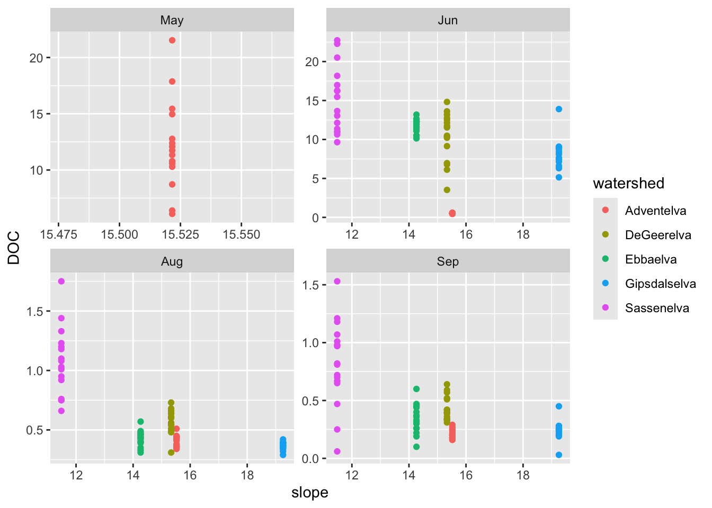
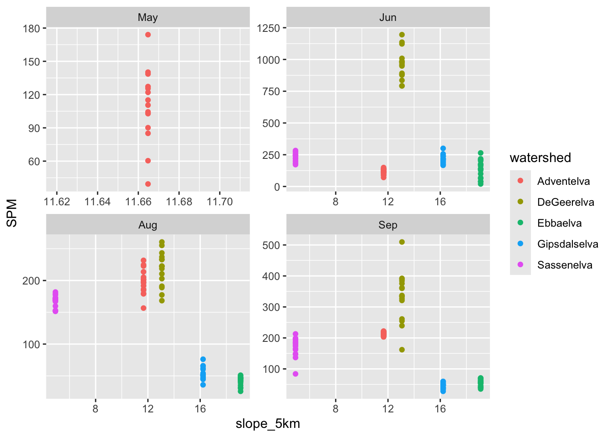

3 Watershed Comparison
3.1 Exploring the watershed dataframe
3.1.1 Preparing the data
# ggplots
# Load the watershed files
watershed_df <- read_csv("datafiles/spatial_data/watershed_dataframe.csv")
watershed_info <- read_csv("datafiles/spatial_data/watershed_info.csv")
# We add a column to watershed_df because it makes summaries easier
watershed_df$count<-1
# If your computer is slow, you can randomly subset the data
watershed_df_sub<-sample_n(watershed_df, 10000)3.1.2 Summarizing the continious variables
# Calculate the mean ndvi, elevation and slope for each catchment
watershed_mean <- watershed_df %>%
group_by(watershed) %>%
summarise_at(c("ndvi", "slope"), mean, na.rm = TRUE)
# Calculate the mean ndvi, elevation and slope for each catchment within 1km
watershed_mean <- watershed_df %>%
filter(distance < 1000) %>%
group_by(watershed) %>%
summarise_at(c(ndvi_1km="ndvi", slope_1km="slope"), mean, na.rm = TRUE) %>%
inner_join(watershed_mean)
# Calculate the mean ndvi, elevation and slope for each catchment within 5km
watershed_mean <- watershed_df %>%
filter(distance < 5000) %>%
group_by(watershed) %>%
summarise_at(c(ndvi_5km="ndvi", slope_5km="slope"), mean, na.rm = TRUE) %>%
inner_join(watershed_mean)3.1.3 Summarizing the ground cover classes
# Count each ground cover class for each watershed and pivot the table
watershed_class_proportion <- watershed_df %>%
group_by(watershed, vegetation) %>%
summarise_at(c("count"), sum, na.rm = TRUE) %>%
pivot_wider(names_from = 'vegetation',
values_from = 'count')
# Calculate the percentages per vegetation class and watershed
watershed_class_proportion <- watershed_class_proportion %>%
mutate(total = sum(c_across(where(is.numeric)), na.rm = TRUE)) %>%
ungroup() %>%
mutate(across(where(is.numeric), ~ . / total*100))
# Drop the columns that we don't need
watershed_class_proportion <- watershed_class_proportion %>%
dplyr::select(-shadow, -water, -total)3.1.4 Exploring the ground cover classes
# Change to long format for ground cover classes to be factors
watershed_class_proportion_pivot<-pivot_longer(watershed_class_proportion,
cols = -watershed,
names_to = 'class',
values_to = 'percentage')
# Plot the data with GGPLOT
ggplot(data = watershed_class_proportion_pivot, aes(x = watershed, y = percentage, fill = class)) +
geom_bar(stat="identity")# Change the axis and from stacked to parallel
ggplot(data = watershed_class_proportion_pivot, aes(x = class, y = percentage, fill = watershed)) +
geom_bar(stat="identity", color="black", position = position_dodge())3.1.5 Join tables and export
# Use join to join the continuous and categorical data into 1
watershed_info_joined <- inner_join(watershed_class_proportion, watershed_mean)
watershed_info_joined <- inner_join(watershed_info_joined, watershed_info)
write_csv(watershed_info_joined,"datafiles/spatial_data/watershed_info_joined.csv")3.2 Relationships to river water chemistry
# Load water chem dataframe
water_chem <- read_csv("datafiles/AB322_Water_Chemistry.csv") %>%
mutate(date = dmy(date)) %>%
mutate(year = year(date), month = month(date, label = TRUE), day = day(date)) %>%
rename("DOC" = "DOC_mg_L",
"POC" = "POC_mg_L",
"NO2_NO3" = "NO2_NO3_umol_L",
"PO4" = "PO4_umol_L",
"SiO2" = "SiO2_umol_L",
"SPM" = "SPM_mg_L",
"dTotHg" = "dTotHg_ng_L",
"pTotHg" = "pTotHg_ng_L")
# Join
watershed_info_joined <- read_csv("datafiles/spatial_data/watershed_info_joined.csv")
catchment_chemistry <- full_join(watershed_info_joined, water_chem)3.2.1 Correlation plots
3.2.2 Scatter plots
# Further exploration
catchment_chemistry %>%
ggplot(aes(x=slope, y = DOC, color = watershed)) +
geom_point() +
facet_wrap(~month, scales = "free")
catchment_chemistry %>%
ggplot(aes(x=slope_5km, y = SPM, color = watershed)) +
geom_point() +
facet_wrap(~month, scales = "free")
catchment_chemistry %>%
ggplot(aes(x=ndvi, y = NO2_NO3, color = watershed)) +
geom_point() +
facet_wrap(~month, scales = "free")catchment_chemistry %>%
ggplot(aes(x=glacier, y = SiO2, color = watershed)) +
geom_point() +
facet_wrap(~month, scales = "free")